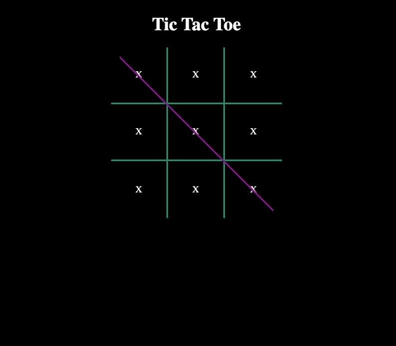
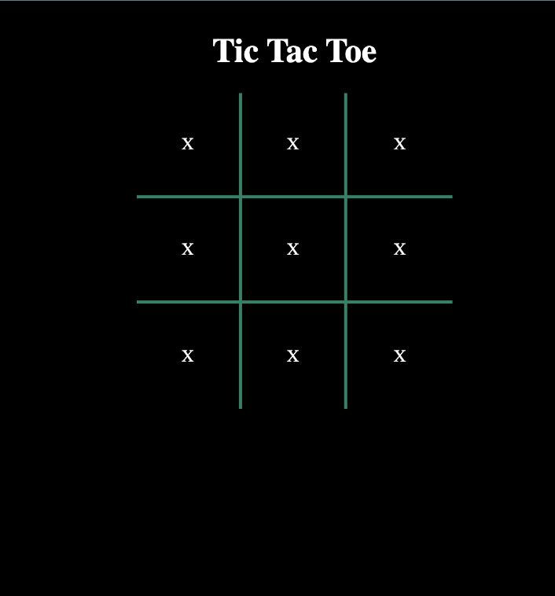
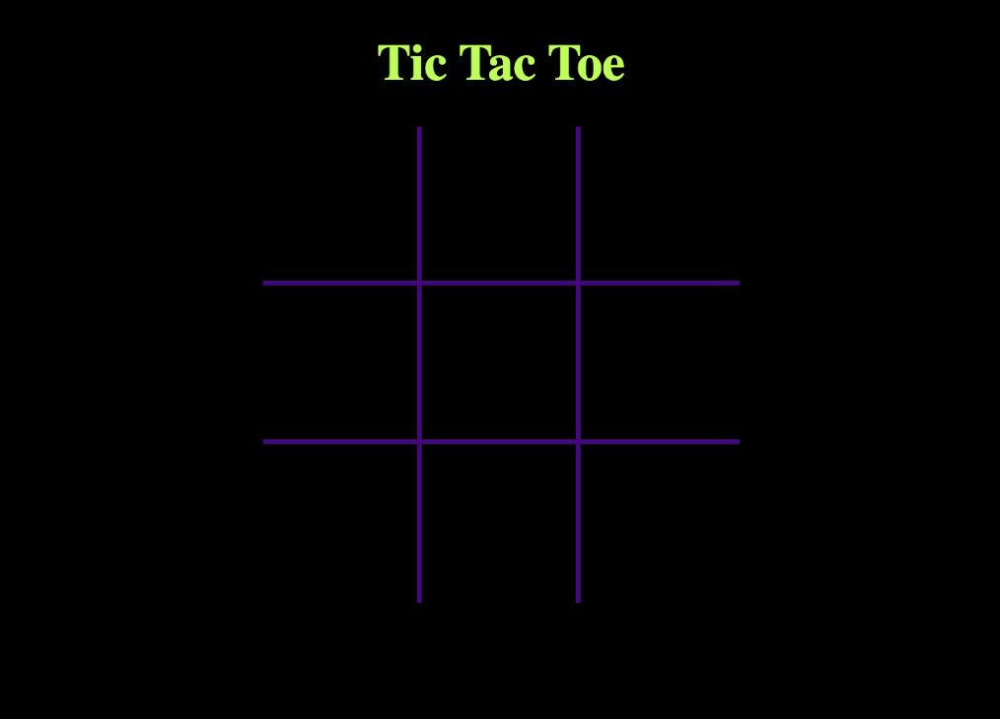
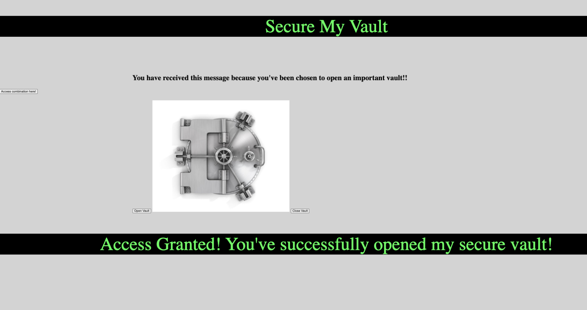
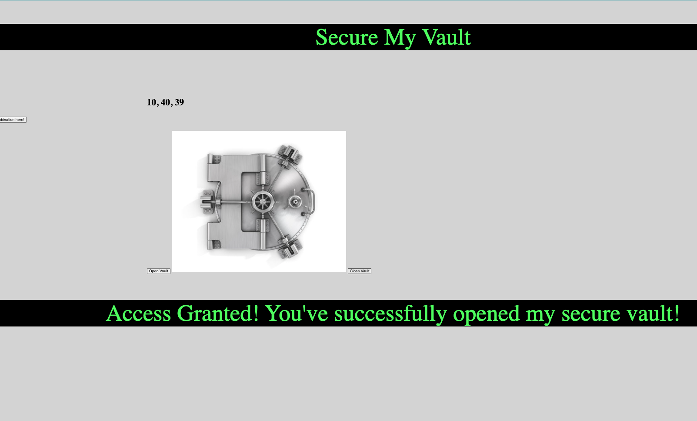
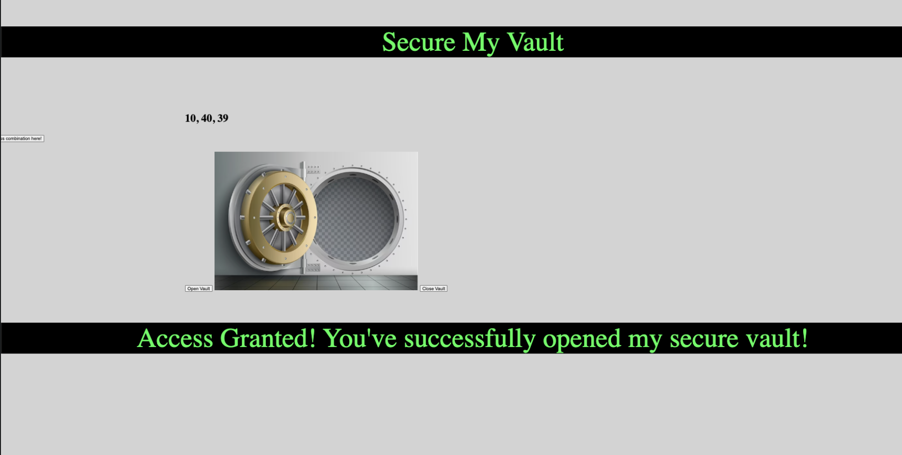
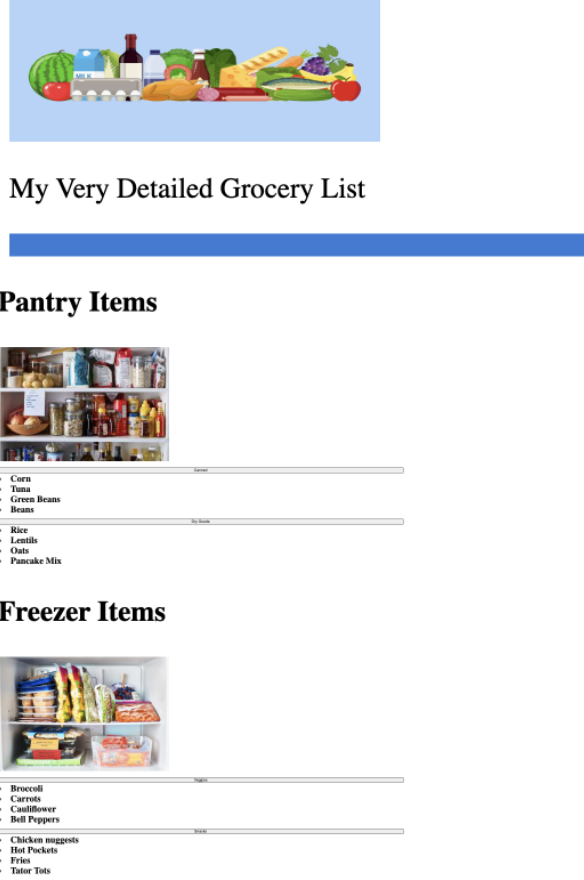
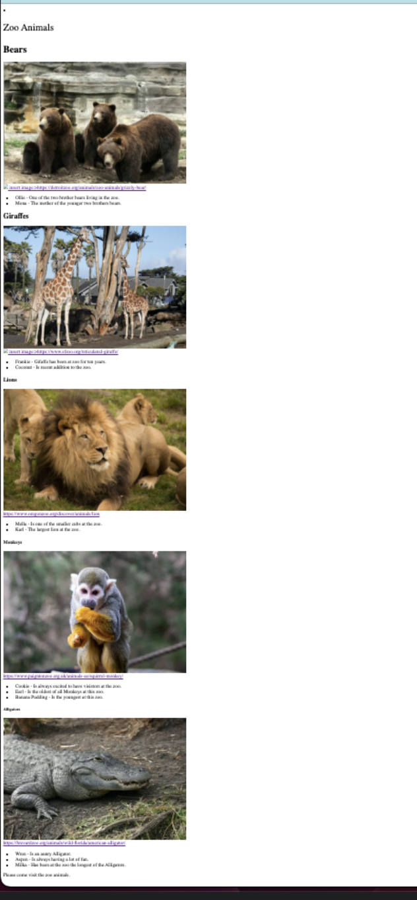

Project & Coursework - Tic Tac Toe - Interactive Game



- Designing Web Interfeaces using computer languages such as; HTML, CSS & Javascript
This project is an interactive Tic Tac Toe game. This is a recent project that reflects the way you enhance your Web page by Javascript creating mulilevels to the your viewers interface.
Project & Coursework - Secure My Vault - Acces Granted!



- Designing Web Interfeaces using computer languages such as; HTML, CSS & Javascript
This project is an interactive Secure Vault, you must access the code to open or close the vault to gain Access. This project explores different uses for CSS.
Project & Coursework - My Grocery List

- Designing Web Interfeaces using computer languages such as; HTML & CSS
This project is an exciting way to explore ways to creatively explore Web Developemnt to enhance everyday task such as Grocery List
Project & Coursework - Zoo Animals

- Designing Web Interfeaces using computer languages such as; HTML & CSS
This project is a blog style with a bit more content and added pitures.